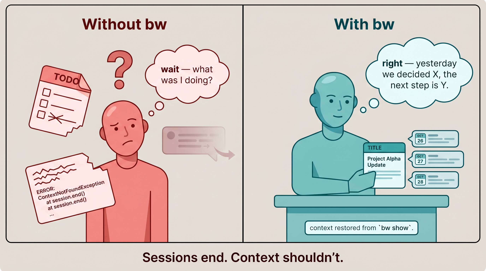

A whole industry is gearing up to sell you the answer. Look at bw (beadwork) before you get locked in. It's free, open source, and might be all you need.
Your assistant probably remembers some of yesterday — memory has come a long way. The trouble starts when you keep one chat running and let it stretch on. The longer a single conversation gets, the more your assistant loses track of what you told it earlier — and how it slips depends on which assistant you use.
Claude compacts: when the conversation fills its context, it summarizes everything so far in one step — so it can abruptly forget specifics it had a moment ago. ChatGPT and Gemini don't compact; they lose track of important items gradually but unevenly as the chat grows. That unevenness is the catch — it makes it hard to predict when the model will suddenly get much dumber. Either way, a long-running chat is a leaky place to keep anything that matters.

Sessions end. Context shouldn't.
bw is the alternative that already exists. Three things it lets you do:
Three reassurances up front:
bw ships with instructions that tell the AI how to install and use it; you mostly just authorize the steps.